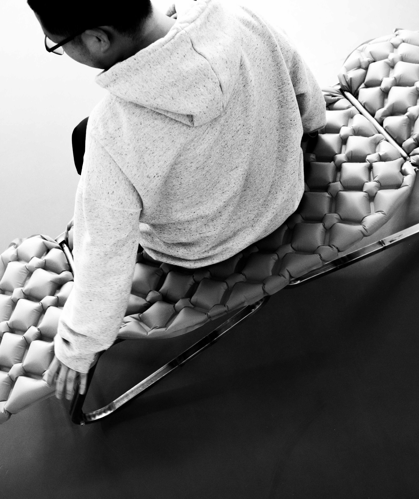
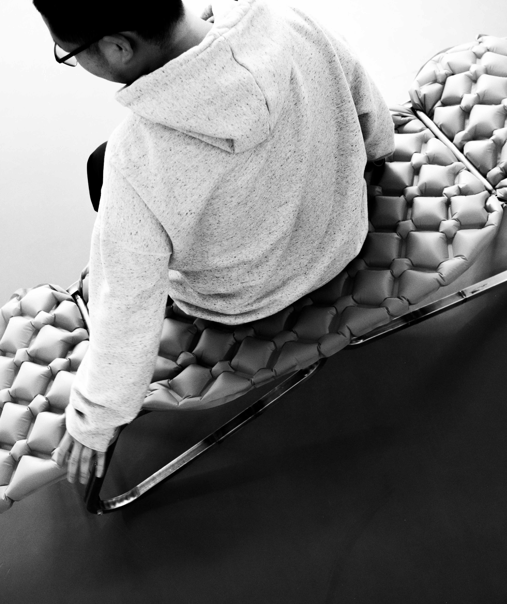
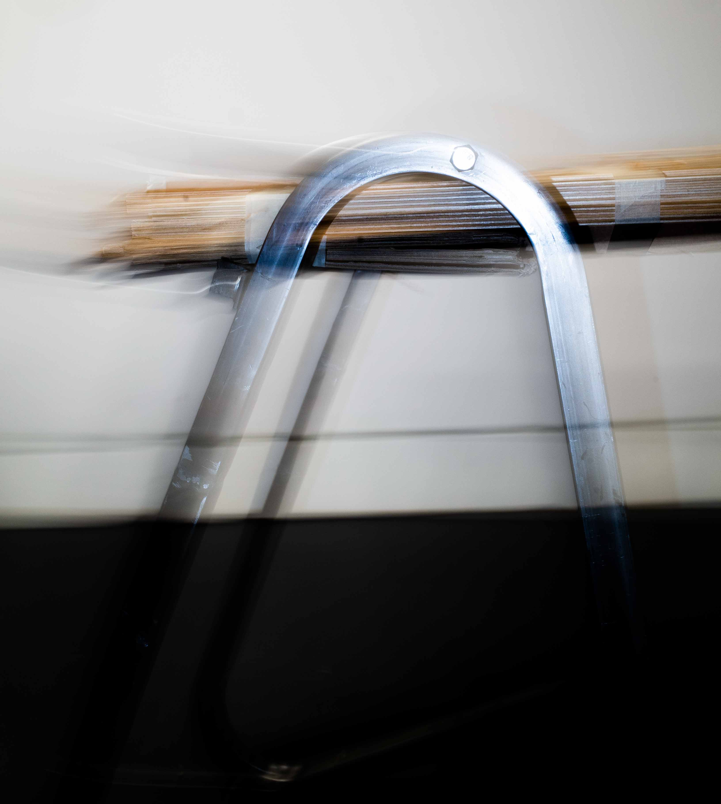
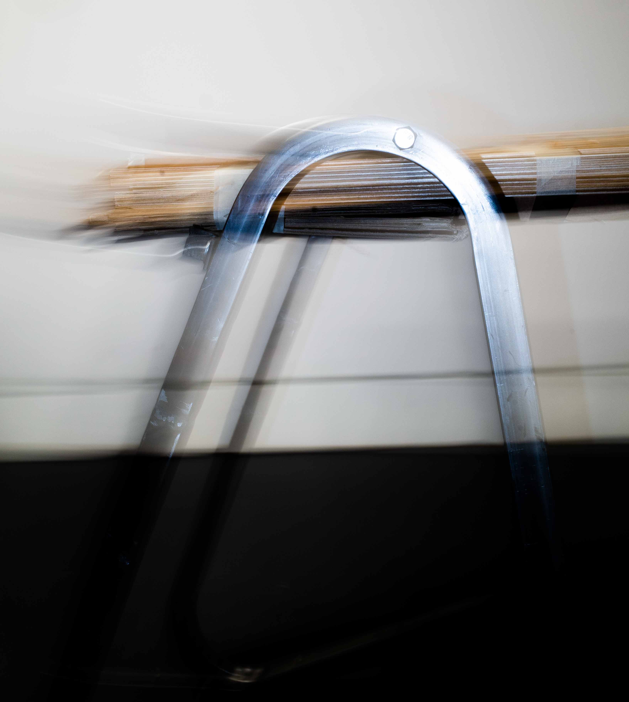

ROCKBELL
Strike one rock with another to trigger a ring. Replace a button with a mindful act.


SONIC THERMOMETER
How does the practice of healthcare change when we emphasize sensory information over absolute measurements and values? This thermometer reminds the user to pay close attention to signals from their body, and that sickness and health are more than binary. This device produces two tones, one effected by the user’s temperature. The device is tuned so a healthy temperature will align the two sound waves and a slight fever will prevent the tones from synchronizing. Place device to forehead and listen (closely) to your body.

Actant Objects
Objects that affect or respond to their environment. Dynamism through action and reaction to prevent sterility.
SEESHELL
Working With Nature: A proposal for shellfish based water quality biosensors.
1) Concept: Computer vision system monitors shellfish motion in response to pollution in seawater (valvometry). A transparent enclosure circulates shellfish with fresh seawater. QR code on Enclosure housing links to sensor webpage. Enclosure tower provides habitat for native species (mussels represented). A network of sensors along a coastline provides real-time and historic information about local conditions, serving as an early warning for sewage or agricultural contamination. Track changing water conditions remotely, or verify in person beach is safe to swim/fish/collect shellfish. Images of SeeShell in different installations, tailored to local coonditions.


2) Context: How can design preserve culture in a changing world?
Poole, England: development of SeeShell began with an investigation of culture and history, and culminated with an ethnographic visit. Historically a major port and center of aquaculture but a shift to a tourism-driven economy now hinders opportunity for younger generations in Poole. Climate change and human development threaten the remaining fishing operations. Traces of a history of aquaculture still glimmer in old Poole, and shape the identity of residents.
A better understanding of life in Poole led to the question “how can preservation of the cultural connection to native shellfish build a more sustainable economic model for seaside towns?”
Pictured: Poole flag, lamppost with cockles dolphin and scallops; motifs of Poole flag, boots on the ground. RCA group projet. Responsible for research concept and images.


3) Form Exploration:
Beacons, way points, and landmarks served as an aesthetic reference for this structure, implying to users that the tower was installed to provide site-specific information.

Frameworks
Systems for bilding: user-defined application.
CAM BENCH
A pair of triangular legs act as a fixture for furniture, providing a sturdy base to support leftovers, clutter, things seldom used, detritus, or shards thrown away. The legs secure a seat without tools or fasteners simply by rotating into place; to make building accessible to non-builders. Potential user-supplied seat materials include: cardboard boxes, fence posts, sticks and yard trimmings, books and paper, boats and oars, brooms and mops, camping equipment, car parts, broken furniture, pallets, bodies.
Inspired by a tricam, dedicated to Oblio and his arrow.


 



 


Unclassified Experiments
Projects for which a category has not yet been defined or where questions still search for their words.
SLIP
A sheer and near weightless slip dress, made of a fully waterproof material. Stronger than steel by weight. Transparent armor, delicate impermeability. The wearer is fully presented but unaffected by outside forces.


FISHCASE
Making the mundane absurd. Flexible rubber case for glasses.